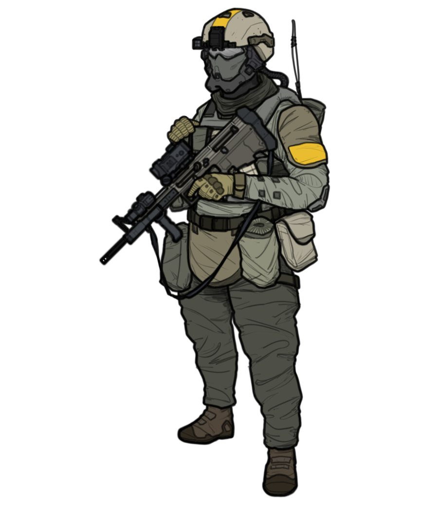
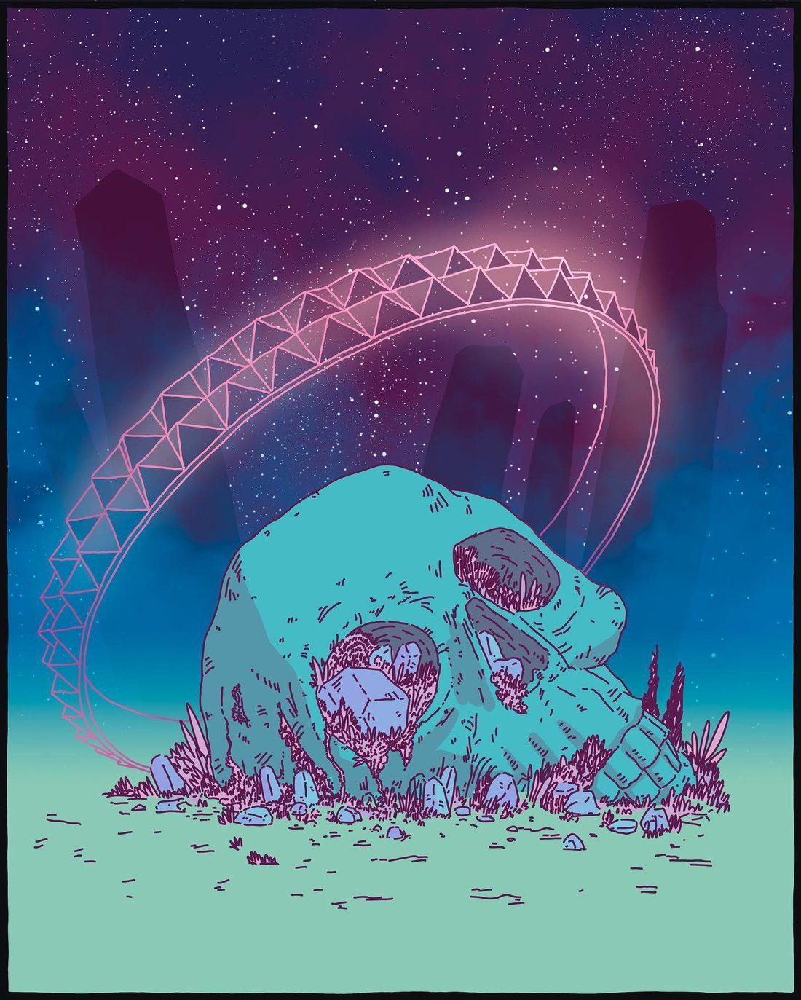

Aster Vey
A flooded archive world. The tide covers the lower stacks twice a day.
RevealedHex 0405
Command Deck's structure, ASTRA's sky. Construction lines, plus marks and segmented bars carry the mechanics. Brass, a serif voice and dashed orbits carry the wonder. One set of elements serves both the Datapad's working screens and the Lexicon's reading pages.
Brass is the only accent. Every other hue is a signal and always travels with a word. Every screen speaks one of two voices.
Neutrals take the accent's opposite hue. Signals keep their meaning but match the accent's weight, and any signal that lands too close to the accent steps aside. Each theme and contrast mode gets its own lightness, so contrast holds whatever you pick. Click any editable swatch to override it.
Rev 01 colors onThe original palette is fixed, so the editor and contrast mode are paused. Turn it off in the header to go back.
Both voices set running text in Space Grotesk: 16.5px on prose pages, 14.5px on mechanical screens. Noto Serif carries titles, values in readouts, pull quotes and the italic accent word, and nothing else. Labels and units are mono.
Set data-voice once, on the body of a screen. The other voice may appear only as an inset, inside a frame, one level deep. Labels and chips are shared and look the same in both.
A free merchant bought at auction in Vey Reach and refit twice since. The crew says she is slow to start and hard to stop.
Read the entry →She was bought at auction in Vey Reach, the only bid on a hull nobody else wanted, and refit twice since. The crew says she is slow to start and hard to stop.
The second spike drive went in at Corvane, after the first one failed on jump 3. Nobody has asked where the replacement came from.
data-orbit-optinCross-frames hold systems, brackets mark attention, orbits give an entity its place in the sky, hairline cells hold peers. Orbits are rationed: the rules below say where they may appear and how apps talk to them.
Each card clips an ellipse larger than itself, so the orbit seems to continue outside. The card's text is hashed into a seed that sets the orbit's entry edge, size, tilt, second ring and satellite. The same text always draws the same orbit.
A flooded archive world. The tide covers the lower stacks twice a day.
Archivists who trade in salvaged records and owe the crew a favor.
The crew's free merchant, refit with a second spike drive and a survey bay.
Same text, same orbit, on every device and every visit.
Lines overshoot by 10px and draw in from the center on load. Use for any panel with a header row.
Brackets replace the full frame when the content is an object to look at rather than a structure to read.
Read the edge before the content. Five edges, five meanings, and each frame is used for its meaning only.
Astrobox.auditFrames() warns about deeper nesting.Click a crew member, or focus the grid and use the arrow keys. A screen has one pair of brackets, so while something is selected the featured plate gives up its own.
Population ≈ 40,000, from one survey pass.
data-orbit-reveal="hover", so only one ever shows. Touch screens light the card nearest the middle of the screen.data-voice="mechanical" hide orbits, unless an element opts in with data-orbit-optin. See Voices in Foundations.Second spike drive fitted at Corvane. Sick bay offline since jump 5.
<!-- the attribute is the interface --> <article class="oc orbit" data-orbit="auto" data-mood="damaged"> // from app code: set it, or call the helper card.dataset.mood = 'nominal'; Astrobox.setMood(card, 'nominal'); // also fires 'astro:mood' // a mood outside the set: give it a colour card.style.setProperty('--mood', '#6fb7ff');
Point at a card, or tab to it. Each one keeps its seeded orbit and mood; only the active card shows it.
A small mark for every entity in the database, generated from its ID. Kind sets the shape, mood sets the colour.
A glyph belongs to a record, not to a word: it appears only where the markup carries an entity's ID from the database, whatever its kind. Kind sets the core shape, the entity's ID seeds the orbit and satellite position, and data-mood colours the orbit and satellite while the core stays ink, so the kind always reads. The glyph shares its tilt with the entity's card orbit, and renaming an entity keeps its glyph.
The Long Patience drilled out of Corvane with a hold full of salvage.
data-seed set to its ID, gets a glyph.Square, tactile and quiet. Brass fill is reserved for the single primary intention on a screen.
The world as the crew first saw it: tides, stacks and the archivists who stayed.
Count things that come in units as units. A smooth bar is for quantities, never for steps.
The track is dashed, the reading is solid, and a jade satellite marks the current value.
Inner rules overshoot the frame by the same 10px as the outer lines, so a table reads as part of the drawing.
Reading pages open up the spacing, set titles in Noto Serif, let the frame recede and keep a contents rail beside the text. Redaction comes from the server as shapes, never as hidden text. Images choose one of three orbit modes.
Twice a day the tide climbs into the lower stacks, and twice a day the archivists carry what they can upstairs.
The archive was built when the sea sat three kilometres further out. Its founders cut the reading halls into the cliff and sealed the record vaults below the waterline, trusting pumps that have not run since the Scream.1 What survives today survives because someone chose to carry it.
The crew came in on the evening tide, after six jumps through the Corvane drill. From orbit the world looked like any other ocean planet. From the landing pad it looked like a library that had lost an argument with the sea.
The stacks are terraces cut into the cliff, one above the other, each holding the records of a single century. The oldest sit lowest. That was a sensible choice until the water rose.
Twice a day the lower three terraces flood to the ceiling. The archivists know the tide tables by heart and work in shifts: one crew clears the shelves as the water comes in, another dries and sorts what was saved. The lit windows you can see from the water at dusk belong to the sorters.
The current keeper, , will trade access for salvage. Her people work the upper galleries by lamplight and answer only to her.
The Ledger does not sell records. It trades them one for one, and it keeps a list of every debt it is owed. Archivists say the list of debts is longer than the archive itself.
The keeper asks for one thing she will not name in front of offworlders: a drive core marked Q7Ʒ-VΞX.2 In return she has promised the crew a single record from the sealed vaults, chosen by them.
Nobody has told her that the sealed vaults have been underwater for forty years. She may already know.
Bars are drawn per word, and scrambles per character, from lengths the server sends. Spaces stay unredacted. The real words never reach the browser.
We do not keep everything. We keep what someone came back for.Keeper of the Ledger · Session 12
The Ledger names a drive core as payment. The crew agrees before asking where it is.
Jump 6 of 11. The sick bay takes debris on exit and goes offline.
The salvaged sensors pick up a beacon nobody can identify yet.
Burning out of Aster Vey orbit with all five container racks full.
The Wardens came down at dusk. Two tank columns crossed the flats before the crew had cleared customs.

Boarding kit, cold-weather issue. The yellow bands mark a warden on drill duty.

Linked from another host. When it fails, the frame keeps its size and shows the alt text.

Dense lists drop the orbit and keep only the aperture ring around each thumbnail.
Values in Noto Serif, units and labels in mono. A readout names its source and its scale.
Every number carries its unit, set the same way on every screen and formatted in the viewer's locale.
Write the raw value once in a <data> element and the kit sets it: tabular digits, a narrow no-break space, the unit in small mono. Numbers follow the viewer's locale.
<data class="u" value="1.6" data-unit="AU"><data class="u" value="41800" data-unit="t"><data class="u" data-kind="pool" value="14" data-max="20"><data class="u" data-kind="range" value="2" data-to="4" data-unit="days"><data class="u" data-kind="est" value="40000" data-source="One survey pass, Session 11"><data class="u" data-kind="delta" value="2" data-unit="HP"><data class="u" data-kind="hex" value="0405"><data class="u" data-kind="cr" value="12400"><data class="u" data-kind="pre" data-unit="TL" value="4"><data class="u" data-kind="dice" value="2d6+1"><data class="u" data-kind="time" value="14" data-day="212" data-real="2026-10-23">// from app code: same rules, returns markup Astrobox.fmt.qty(1.6, 'AU'); // 1.6 AU, or 1,6 AU in German Astrobox.fmt.pool(14, 20); // 14/20 Astrobox.fmt.est(40000, '', 'Survey, S11'); // ≈ 40,000, dashed: provisional Astrobox.fmt.time({day: 212, session: 14, real: '2026-10-23'}); Astrobox.hydrate(root); // formats every <data class="u"> inside root
Every component keeps its shape in every state, so nothing jumps when data arrives, fails or is withheld.
Factions appear here once the crew has dealt with one.
Nothing written for Session 15.
The keeper's patron is , and the debt was signed on . The rest of the ledger is open to the crew.
Bars drawn per word from lengths the server sends
Only the Captain can open this entry. Ask the GM if you think you should see it.
Eight named movements, two curves and two tempos. Anything that moves takes its timing from these tokens and nothing else.
Prose screens use a soft ease-out; mechanical screens use a crisper curve and run about a third faster. Both are set by data-voice, so components never choose their own timing.
--t-press--t-swap--t-settle--t-draw--t-pop--t-count--t-drift--t-wait--ease is cubic-bezier(.2,.7,.2,1) in prose and cubic-bezier(.2,0,0,1) in mechanical. --ease-pop is reserved for plus marks.Opacity and colour fades don't cause motion sickness, so they remain the one way to show change when movement is off.
The number steps one unit at a time and the meter fills or empties one cell per step, together, over --t-count. A large jump keeps the same total time, so it never drags.
// from app code
Astrobox.count(hullValue, 12);
Astrobox.count(hullCells, 12);
Everything on this page ships as one package, so the Datapad, the Lexicon and any later app build from the same source.
astrobox.tokens.cssastrobox.cssastrobox.jsastrobox.tokens.jsonGUIDELINES.mdAGENTS.mdREADME.mdexample.htmlThe package ships signal brass. If you picked another accent or overrides in Color tokens, copy this stylesheet and load it after astrobox.tokens.css, or call the line below at startup.
<!-- plain HTML --> <link rel="stylesheet" href="astrobox.tokens.css"> <link rel="stylesheet" href="astrobox.css"> <script src="astrobox.js"></script> // Nuxt: the layer's plugin inits after hydration export default defineNuxtConfig({ extends: ['astrobox'] }) // after rendering new markup Astrobox.init(container)
AGENTS.md, for example from the project's CLAUDE.md. It holds the hard rules, the decision tables, markup snippets and a pre-finish checklist.